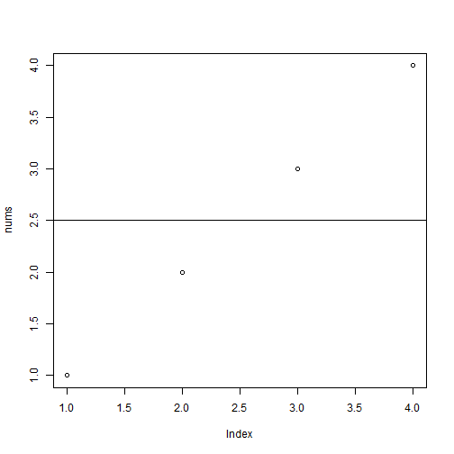

- Yes!
- No
HINT: Everyone needs to average lists of numbers. All the time.
People are always tossing around lists of numbers. What else would we do with them?
381265947
HINT: Everyone needs to average lists of numbers. All the time.
People are always tossing around lists of numbers. What else would we do with them?
Hello. Let's talk about lists of numbers. Sometimes you have a list of numbers and you are desperate to average them. Well I've got a way for you to do that - along with visualizing the numbers. Does that sound like a great tool to have?
Well, enjoy: https://courseradude.shinyapps.io/project/
Github: https://github.com/381265947/DataProductsCourseProject
Notice that spaces are handled properly because we live in the future.
text <- "1, 2, 3, 4";
nums <- sapply(strsplit(text, "\\s*,\\s*"), as.numeric);
avg <- mean(nums);
avg;
## [1] 2.5
plot(nums);
abline(h = avg);
